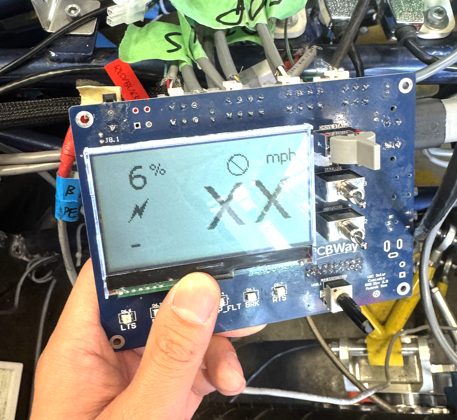
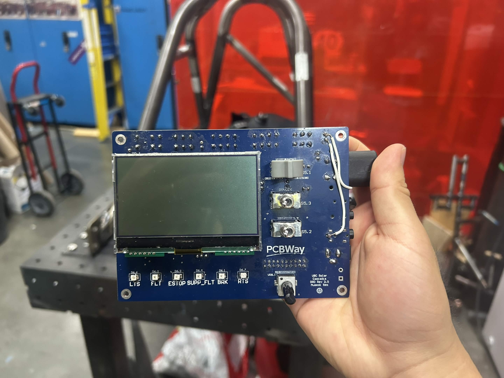
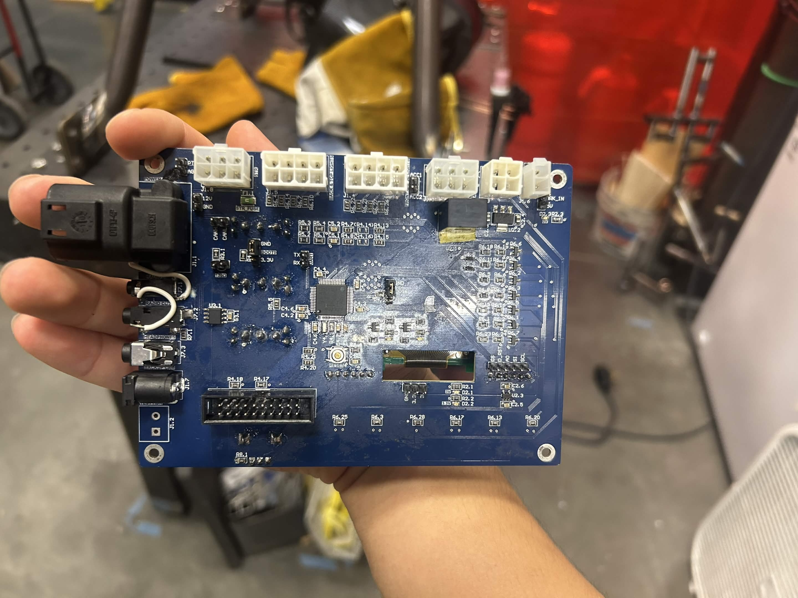

The Driver Dashboard was my first major PCB project at UBC Solar involving a microcontroller, coordination with several subteams, and ownership of a system critical to the operation of our solar race car.
It was also the project that changed how I approached hardware design. Instead of only asking whether a circuit would work under normal conditions, I began asking how it could fail, how it would behave in its actual operating environment, and what decisions would make it more reliable, testable, and practical.

The context
The Driver Dashboard, or DRD, acts as the primary interface between the driver and the race car’s low-voltage electrical system. It receives physical inputs from the driver, displays vehicle information through LEDs and an LCD, and communicates with systems such as the battery management system, motor-control electronics, telemetry system, and other vehicle PCBs over CAN.
This revision had several major requirements. The PCB needed to fit within an area of approximately 150 mm × 100 mm, remain visible and accessible to the driver, avoid interference with the steering column, and support secure mounting inside the vehicle.
The board also needed to operate reliably inside a hot and electrically noisy race-car environment. Temperatures inside the vehicle could approach 50 °C, meaning component voltage, current, power, and thermal ratings could not be evaluated only under room-temperature bench conditions.
Because the dashboard interacted with the driver, firmware, electrical system, and mechanical structure, its requirements came from several different groups. I had to balance electrical routing, component placement, connector access, driver usability, mechanical clearances, debugging access, project cost, and schedule constraints.
This was also my first substantial design built around a microcontroller. The board used an STM32F103 to process driver inputs, control dashboard functions, communicate over CAN, and support the logic required by the vehicle-control system.

What I tried
My main objective was to design a board that would remain reliable throughout testing and competition. Previous versions of the vehicle had experienced electrical inconsistencies, so I wanted to include sufficient design margin and protection, even where the relatively low power consumption meant that components were unlikely to approach their maximum ratings.
I began by learning how to evaluate and select MOSFETs for different switching applications. This included comparing N-channel and P-channel devices, considering high-side and low-side switching, checking gate-drive requirements, reviewing on-resistance, and calculating power dissipation and junction-temperature rise.
Although the thermal calculations showed that the devices would operate well within their limits, the process helped me understand how component ratings must be evaluated as part of a complete operating condition rather than as isolated values from a datasheet.
The board also included ESD protection, reverse-polarity protection, fusing, signal conditioning, and MOSFET-based control circuitry. These features were intended to prevent external faults or incorrect connections from damaging the dashboard or the electronics powered through it.
Designing around the STM32 required me to study its datasheet and development tools in detail. I verified the electrical limits and alternate functions of each pin and confirmed which pins supported CAN, SPI, interrupts, analog inputs, and SWD debugging.
I also learned the importance of the circuitry surrounding the microcontroller. Decoupling capacitors needed to be placed close to the supply pins, external signals required protection and conditioning, and the boot, reset, programming, and communication connections had to be configured correctly.
Switch debouncing was one example of coordinating the hardware and firmware design. Mechanical switches can rapidly transition between states during a single press, causing the microcontroller to detect several commands instead of one. We addressed this through a combination of hardware filtering and firmware-based debouncing.
Using both approaches added resilience without significantly increasing the cost or complexity of the board. It also showed me how hardware and firmware can support each other instead of assigning every possible failure case entirely to one side.
Mechanical integration was another major part of the design. I worked with the vehicle dynamics and structures teams to conduct physical mock-ups and confirm the dashboard dimensions, mounting position, connector access, driver visibility, and steering-column clearance.
Feedback from drivers also influenced the placement of the switches, LEDs, and LCD. The board needed to be electrically functional, but it also needed to present information clearly and allow the driver to operate the controls comfortably during competition.
Although I did not write the production firmware, I worked with the firmware team to define the board’s switches, indicators, communication interfaces, pin assignments, and debugging requirements. I designed the hardware to support development and troubleshooting through a dedicated SWD connection for a J-Link or ST-Link debugger.
The cross-team work also taught me to communicate the impact of requested changes. Moving a connector might appear to be a minor adjustment from a mechanical perspective, but on a compact two-layer PCB, it could require major rerouting, component relocation, and another round of design verification.
In some situations, a PCB change could delay the project by approximately a week, while a small enclosure adjustment could solve the same problem much more quickly. Explaining these trade-offs allowed the team to select the solution that was best for the complete vehicle rather than the solution that was easiest for one subteam.
Board bring-up exposed several issues that were difficult to predict during schematic design. One of the most time-consuming problems was an inconsistent connection between the J-Link debugger and the STM32.
We spent approximately a week checking the power rails, programming connections, reset behaviour, firmware configuration, and debugging settings before isolating the issue to a damaged microcontroller. The exact cause could not be confirmed, but possible contributors included ESD exposure, soldering damage, or improper storage and handling.
Testing also revealed switch bouncing, which we observed directly by probing the signals with an oscilloscope. Seeing the unstable waveform made the purpose of debounce circuitry much clearer than simply reading about it in a datasheet.
Another lesson from bring-up was that additional test points are usually more useful than expected. Signals that appear easy to access in the schematic can be difficult or unsafe to probe on the assembled board. After this project, I became more deliberate about adding test access for power rails, reset lines, communication signals, and important control nodes.


What I learned
The Driver Dashboard taught me that a reliable PCB is not created by one major feature. Reliability comes from many smaller decisions made throughout the design process.
Component derating, thermal analysis, ESD protection, reverse-polarity protection, decoupling, signal conditioning, debugging access, mechanical placement, and clear communication between teams all contribute to whether a system works consistently outside the lab.
The project also changed how I thought about microcontroller-based hardware. The microcontroller may perform the computation, but its reliability depends on the power, protection, filtering, communication, and debugging circuitry surrounding it.
I also learned that technical design and team coordination cannot be separated in a system-level project. A design decision that appears simple to one subteam may create significant work for another. Clearly communicating constraints, schedules, and implementation costs helps the team make better decisions for the overall vehicle.
Integration meetings became more effective once I began providing context beforehand, defining the decisions that needed to be made, and preventing discussions from becoming focused on implementation details outside the meeting’s purpose.
Most importantly, the DRD changed the question I ask when designing hardware.
Instead of only asking, “Will this circuit work?”, I now ask:
“How can I make this circuit reliable, testable, and practical for the people who need to use it?”